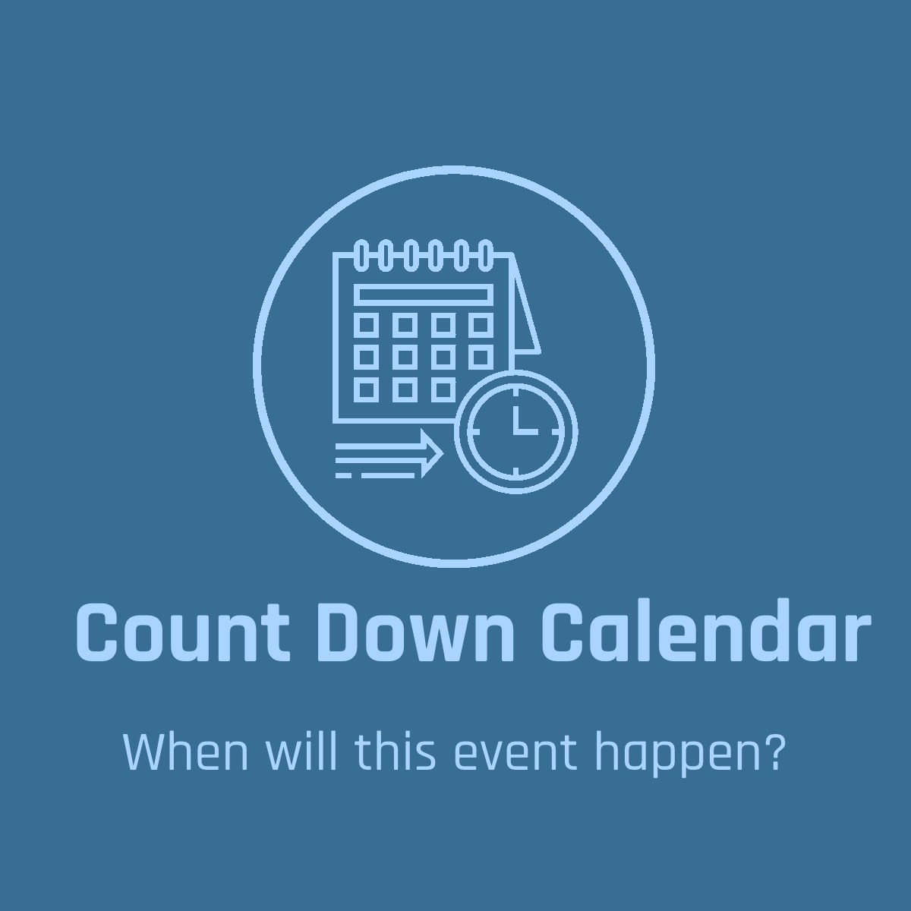

Count Down Calendar
Specific Date Details

If you need to specify your own date, you can do so using the quick and easy date format Month, Day, Year. Now you'll know exactly how many days, weeks, or years you have until the specific event. A common question for this use could be "There's a dinner party I need to plan and need to know the exact time details to order the right number of items, food, service, etc. for the event." Here you can use and share such information for whenever and whoever you need. You can also input any date you want up to 2050 and/or check other dates of the past down from 1972. Unlike other sites you'll have access to fast information for the exact time details of the specific event in format of seconds, minutes, hours, days, weeks, years. In order to get the best experience using this page, you'll need a working mouse and keyboard and/or if on mobile, make sure your touchpad and virtual keyboard is accessible/permissions enabled. If you only need to how many days for the major holidays you can find that information on the home page and/or if you want to know the full time details of the major holidays you can find that information on the second page.
Minutes:
Hours:
Days:
Weeks:
Months:
Years: